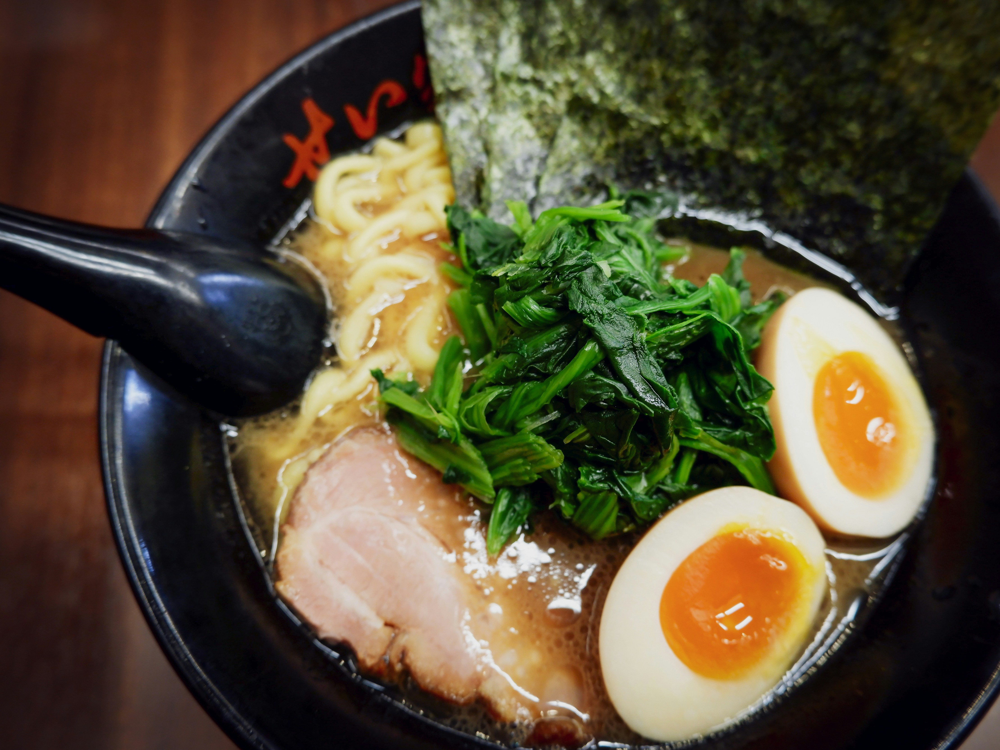

Odin Recipes
Home
Ramen Recipe

Description of dish;
Ramen is a Japanese noodle soup, which always consists of four elements: broth, sauce, ramen noodles and toppings.
It combines the savoury flavours of meat, chicken and/or fish with a salty sauce.
Ingredigents;
- 3 & 1/2 cups vegetable broth
- 1 pack of ramen noodles with drid vegetables
- 2 teaspoons soy sauce
- 1/2 teaspoon chilli oil
- 1/2 teaspoon minched fresh ginger
- 1 teapoon sesame oil
- 2 slived green onions
Cooking steps;
- In a medium saucepan combine broth & noodles.
- Cover and bring to a boil over a high heat; stir to break up noodles.
- Reduce heat to medium and add soy sauce, chilli oil and ginger.
- Simmer, uncovered for 10 minutes.
- Stir in sesame oil and garnish with green onions.
Try a different recipe!